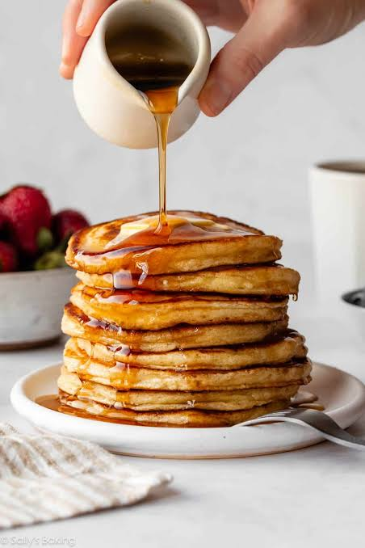

Fluffy Pancakes

Description
Fluffy pancakes are a beloved breakfast classic known for their light, airy texture and comforting warmth.
Stacked high and served fresh from the griddle, these thick American-style pancakes are the ultimate morning
treat. Simple to prepare yet incredibly satisfying, they are perfect for cozy family weekends and casual
brunches alike.
The flavor profile of a perfect pancake is subtly sweet with a delicate buttery richness that melts in your
mouth. Their soft, sponge-like crumb is ideal for absorbing delicious toppings. Whether drenched in pure maple
syrup, paired with fresh berries, or topped with a pat of melting butter, they bring joy to any breakfast table.
Ingredients
- All-purpose flour
- Baking powder (for that perfect rise)
- Sugar
- Salt
- Milk
- Unsalted butter (melted)
- Egg
- Maple syrup (for serving)
Steps
- Mix the dry ingredients — Whisk together the flour, baking powder, sugar, and salt in a
large bowl.
- Whisk the wet ingredients — In a separate bowl or measuring cup, mix the milk, egg, and
melted butter until combined.
- Combine the mixtures — Pour the wet ingredients into the dry ingredients and stir gently
with a spatula just until combined (do not overmix; small lumps are perfectly fine).
- Preheat the pan — Heat a non-stick skillet or griddle over medium heat and lightly coat it
with a little butter or oil.
- Pour the batter — Scoop a portion of batter (about 1/4 cup) onto the hot skillet for each
pancake.
- Flip the pancakes — Cook until bubbles form on the surface and the edges look dry, then
carefully flip and cook the other side until golden-brown.
- Stack and serve — Remove from the heat, stack them high on a plate, drizzle generously with
maple syrup, and serve warm.
Home